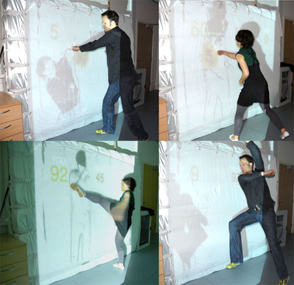
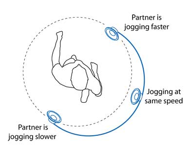
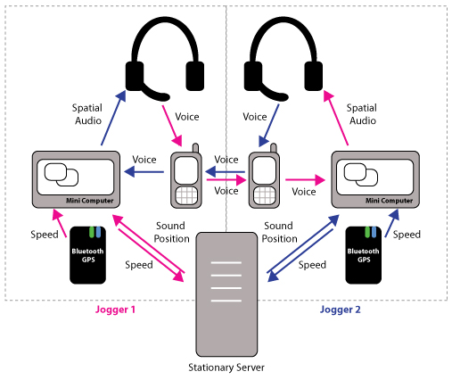

EXTERTION EXERCISE HHS
De meeste mensen op de Haagse Hogeschool pakken de lift om naar hun locatie toe te komen. Dit omdat ze het te veel moeite vinden om met de trap te gaan of wat ik al wel eens vaker heb gehoord: “ik betaal er toch schoolgeld voor”.
Concept
Om de studenten en medewerkers van de Haagse Hogeschool meer te laten bewegen wil is mijn concept een app die automatisch inlogt en uitlogt als je in de Hhs komt. Hij telt hoeveel trappen je hebt gelopen en je kan strijden tegen je vrienden en trofeeën behalen.
Hoe gaat het dan in zijn werk?
De student of medewerker download eerst de applicatie en vervolgens meldt hij zich aan. Hij kan vrienden toevoegen, maar er is ook een homepage met de statistiek wie die dag het meest de trap heeft genomen van de gehele school. Je hebt een eigen profiel en daarmee kun je trofeeën verdienen. Ook zie je op de homepagina je eigen score zien en kun je bij je profiel je hoogste en laagste score van een dag van jou bekijken.
Bij aankomst in de hhs wordt je automatisch aangemeld. Het spel begint. Wie haalt de hoogste score die dag en wie heeft de meeste trofeeën? Wordt jij de held van de dag, week of maand van de school? Je kunt je vrienden inhalen door zoveel mogelijk trappen te lopen en dus niet met de lift te gaan. Je kunt zelfs tegen jouw leraren strijden!
 Technisch
De studenten en medewerkers maken gebruik van hun smartphone. Op een smartphone zitten allerlei sensoren die vele dingen kunnen meten. Er moet ten eerste een applicatie komen waar de student of medewerker zich op kan registreren. Als ze in het gebouw aankomen moeten ze automatisch worden aangemeld. Dit kan door middel van de sensor Ultrasonic. De traptreden die de student of medewerker loopt kunnen geregistreerd worden door een accelerometer die in de meeste smartphones zit. De student of de medewerker komt dus binnen in de school de sensoren op de smartphone ziet dat. Dit geldt ook als de persoon een trap opgaat.
Technisch
De studenten en medewerkers maken gebruik van hun smartphone. Op een smartphone zitten allerlei sensoren die vele dingen kunnen meten. Er moet ten eerste een applicatie komen waar de student of medewerker zich op kan registreren. Als ze in het gebouw aankomen moeten ze automatisch worden aangemeld. Dit kan door middel van de sensor Ultrasonic. De traptreden die de student of medewerker loopt kunnen geregistreerd worden door een accelerometer die in de meeste smartphones zit. De student of de medewerker komt dus binnen in de school de sensoren op de smartphone ziet dat. Dit geldt ook als de persoon een trap opgaat.
Research
Remote impact

Remote impact is een game dat samen gespeeld kan worden en mensen tegen elkaar strijden om zoveel mogelijk punten te verdienen. Het maakt gebruik van het gehele lichaam en kan ook kracht meten die de persoon geeft.
Op een soort matras wordt er een silhouette geprojecteerd met een bepaalde beweging. Dit silhouette verandert van beweging en plaats. De beweging die het silhouet aanneemt moet de speler ook doen en dan tegen het doek aan. Denk hierbij aan een boks, een trap etc. Ook kunnen de spelers trappen en klappen ontwijken om opzij te wijken. De spelers spelen eigenlijk allemaal tegen elkaar iedereen heeft een doek ze slaan/trappen elkaar dus en ontwijken elkaar ook. Ze kunnen ook tegen elkaar praten door voice connection tussen de locaties. Het scherm voelt ook aan hoe hard iemand slaat of schopt en krijgt en hoe harder de speler schopt of slaat hoe meer punten. De persoon met de meeste punten wint. Tijdens dit spel wordt er gebruik gemaakt van de sensoren Pressure/Bend/Pull/Twist en Microphone. Het doel van dit spel is om meer lol te hebben en om meer te bewegen. Ook wordt het ingezet om bijvoorbeeld banden van medewerkers te verbeteren.
Jogging over a Distance

Jogging over a Distance geeft de mogelijkheid om vanaf een afstand samen met iemand te joggen. Je kunt ook weten of iemand sneller rent, even hard rent, of minder hard rent door de stem van je “mede joggenoot”. Tijdens het joggen hebben jij en jouw jog partner een koptelefoon op en een klein zakje rond de middel. Tijdens het joggen wordt de hartslag gemeten en dit gebruikt om de audio van de conversatie in een 2D-geluidsvlak te plaatsen. Als een jogger spreekt, hoort de partner de gelokaliseerde audio en kan deze detecteren of de audio van voren, van de zijkant of van achteren komt en dus probeert de ander meer moeite, minder moeite of hetzelfde tempo proberen aan te houden. Joggen over afstand bestaat uit twee systemen, een hartslagmeter (op de afbeelding staat GPS), een mobiel met Bluetooth verbinding voor de spraak en data en uiteraard de headset. De hartslag gegevens worden draadloos verzameld en naar de minicomputer gestuurd.De computer verzendt deze gegevens vervolgens via de 3G-verbinding van de mobiele telefoon naar een server, die de relatieve inspanning berekent die mensen investeren in de run. Als gevolg hiervan berekent een algoritme een geluids positiewaarde voor elke jogger. Terwijl elke jogger praat, wordt hun stem opgepikt door een microfoon en wordt het geluid via een mobiele telefoon overgebracht. De mini-computer gebruikt de geluids positiewaarde die is ontvangen van de server om de audiogegevens om te zetten in ruimtelijke 2D-audio door de geluidsbron op een denkbeeldig vlak rond de kop van de joggers te plaatsen. Het resultaat is dat de jogger de stem van hun partner hoort komen vanuit een bepaalde richting. Je kunt dit spel zowel competitief als samen spelen en het doel is om gebruikers meer te laten bewegen.

Reflection
Dit topic vind ik zelf heel erg interessant. Hoe je mensen hoe bewegingen kunt tracken en ze aan te zetten om bijvoorbeeld meer te bewegen. Toevallig had ik in het begin van een jaar een project waarbij we kinderen meer gingen laten bewegen door middel van exertion gaming.
De toekomst voor exertion gaming is denk erg groot. Je hebt nu al heel erg veel grootse dingen in combinatie met VR. Zelf zou ik niet weten hoe het nog gaver kan of nog interessanter, maar dit kan vast. Voor project F hebben wij een concept voor een uitgaans app gemaakt met behulp van sensoren en blockchain. Dit gaat meer over sensoren en niet zo zeer over games, maar daar zijn wel veel mogelijkheden in om de mens het makkelijker te maken.
Het onderwerp exertion gaming heeft aan mijn verwachtingen voldaan, maar ik zou er misschien wat langer over door willen hebben gegaan.